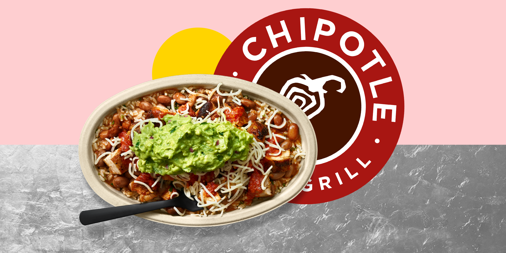
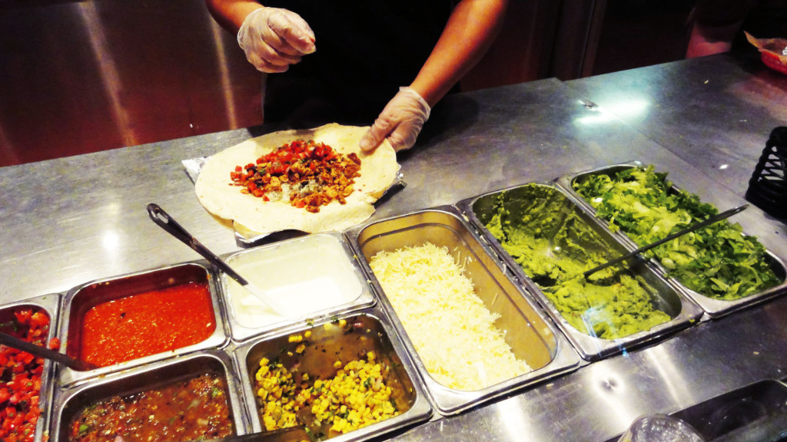

Chiptole is magical.
A Chipotle bowl is the best meal you can get for under $10 in Blacksburg. I have tried everything around town from Five Guys to Mellow Mushroom, The Cellar and even Cabo Fish Taco, but nothing comes close to the flavorful, fulling meal from Chipotle.
What makes Chipotle so great?
I can walk from my office and get to Chipotle in less than 7 minutes, which has helped me to enjoy my days at the office significantly more. Watching public speaking speeches with a bowl nestled right next to my computer makes me smile.
Each Chipotle bowl has its own unique taste and flavor, making the experience truly special. Whether it is a chicken, steak or tofu bowl or burrito, Chiptole always makes sure your protein is filled to the top with nutricious toppings such as corn, beans, sour cream, lettuce, salsa and even the beloved guacamole!
Fast Food Done Right
While the debate as to whether or not Chipotle qualifies as fast food remains split, I enjoy being able to have a quick meal that leaves me refreshed and not lacking energy for the rest of the day.
Chipotle is an excellent option to bring to a picnic, as the bowl is easy to transport, open up and enjoy nearly anywhere!